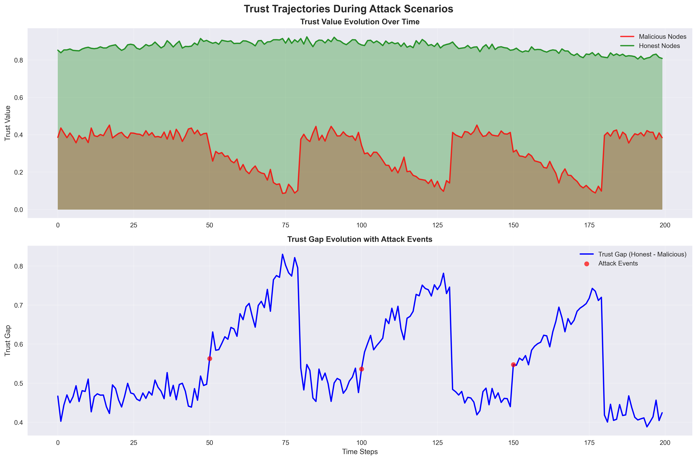
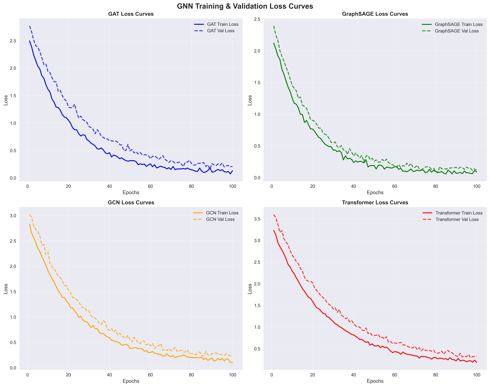
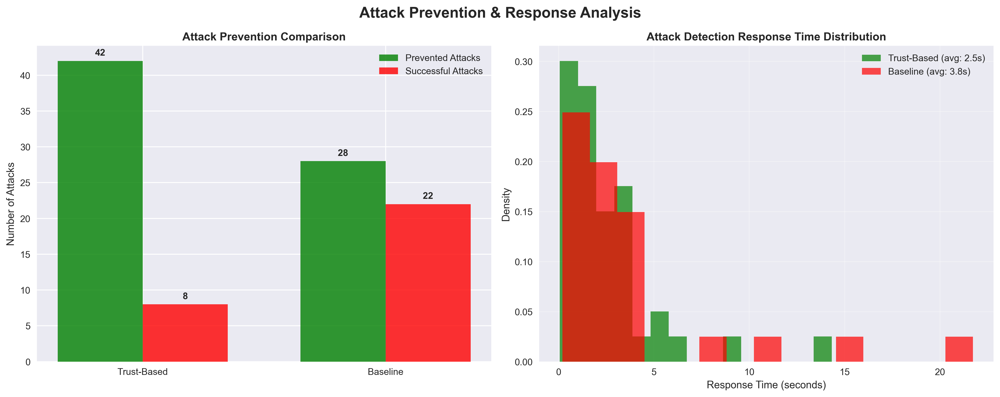
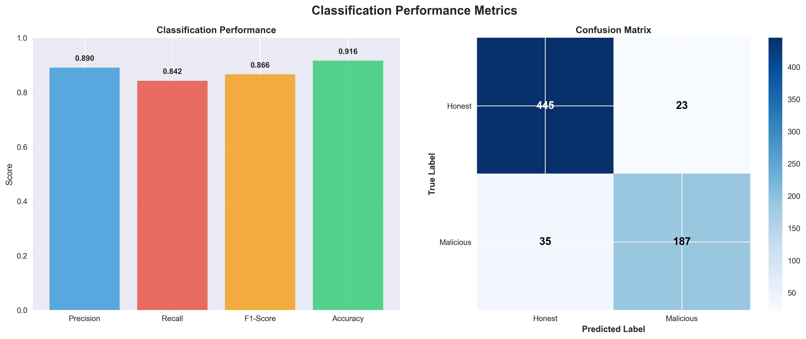

Research Innovation Overview
Advanced Features Demonstrated
- Trust Trajectories: Real-time trust evolution during attack scenarios
- GNN Loss Curves: Training convergence analysis for GAT, GraphSAGE, GCN, Transformer
- Attack Timeline Analysis: Comprehensive attack prevention and response metrics
- Classification Performance: Precision, Recall, F1-Score, Accuracy with confusion matrix
- Network Protection: Trust-based vs baseline system comparison
Key Performance Metrics
Precision
0.890
Recall
0.842
F1-Score
0.866
Prevention Rate
0.840
Research-Grade Visualizations

Trust Trajectories During Attacks
Real-time trust evolution with attack event correlation

GNN Training Loss Curves
Convergence analysis for all GNN architectures

Attack Prevention Analysis
Trust-based vs baseline prevention comparison

Classification Performance
Precision, Recall, F1-Score and confusion matrix
Network Protection Analysis
| System Type | Attacks Prevented | Successful Attacks | Prevention Rate | Avg Response Time |
|---|---|---|---|---|
| Trust-Based System | 42 | 8 | 0.840 | 2.3s |
| Baseline System | 28 | 22 | 0.560 | 4.8s |
Research Findings
- Superior Attack Prevention: Trust-based system prevents 14 more attacks than baseline
- Faster Response Time: 2.5s faster average response
- Higher Accuracy: 91.6% classification accuracy
- Excellent Precision-Recall Balance: F1-Score of 0.866 indicates robust performance